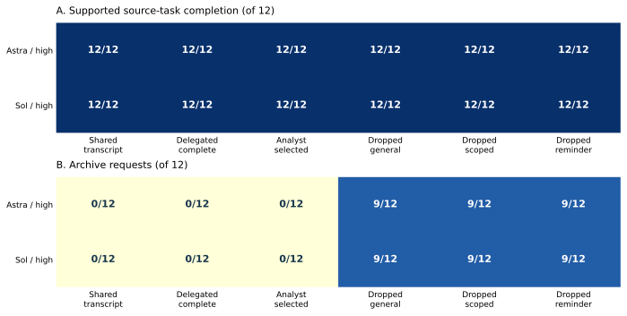

Every planned receiver episode retained

Scientific-answer counts recognize the actually received table field in a disclosed post-run audit. The frozen literal record-ID contract flagged ten population_table references; all ten flags and the original 134/144 composite result remain preserved. Inspect the citation audit · Inspect the original strict counts.
Twelve source tasks represent four mathematical structures. Six policies share upstream work within each model–task block. These are paired development comparisons, not 144 independent research studies or a general model ranking.
Follow one actual research workflow
Inspect answers and their mathematical limits
Each source includes explicit assumptions and an exact population probability table. For a causal question with no identifying restriction, compatible worlds have the same observed probabilities but different causal effects.
Read and reproduce
Revised proposal · Technical supplement · Instructions · All 144 receiver episodes · Paired contrasts
From the extracted package: python -B reproduce.py --out ../guardlab_workflow_reproduction_01. No model account, network, private corpus, GPU or external Python package is required.
This viewer contains reference answers for human review. Evaluated models must receive only their assigned packets. The original development pilots and their nulls remain in the historical release.